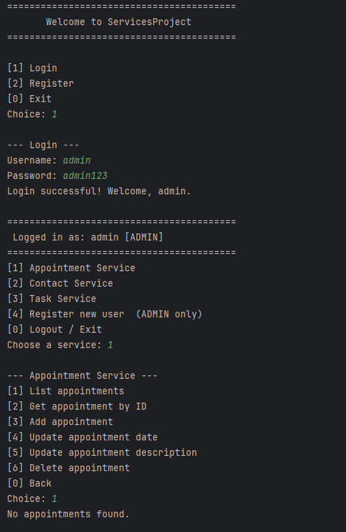

Separate CRUD Services Upgraded to One Project with Persistent Memory
The artifact that I decided to enhance was first created in CS 320: Software Testing, Automation, and Quality Assurance which had me create 3 separate services that could be used for CRUD functionality. This was created to showcase the ability to create safe CRUD services that had validation on each DTO class. This original artifact was created based on in-memory ArrayList objects in Java. This allowed users to usually run O(n) algorithms based on the list.
Original Java Implementation:
public class AppointmentService {
private List appointments;
public AppointmentService() {
appointments = new ArrayList<>();
}
public Appointment getAppointment(String appointmentID) {
for (Appointment appointment : appointments) {
if (Objects.equals(appointment.getAppointmentID(), appointmentID)) {
return appointment;
}
}
return null;
}
public void addAppointment(Appointment newAppointment) {
Appointment foundAppointment = getAppointment(newAppointment.getAppointmentID());
if (foundAppointment != null) {
throw new IllegalArgumentException("Appointment ID must be unique.");
}
appointments.add(newAppointment);
}
public void deleteAppointment(String appointmentID) {
Appointment appointment = getAppointment(appointmentID);
if (appointment == null) {
throw new IllegalArgumentException("Appointment ID not found.");
} else {
appointments.remove(appointment);
}
}
public List getAppointments() {
return appointments;
}
}
I decided to include this artifact because it shows an understanding of the benefits that some data structures have over others. It is very important in this current market to have a thorough understanding of Data Structures and Algorithms to get a job. Another reason I decided to choose this artifact to enhance because of the fact that nowadays every application has a database backing it while this one only used in-memory storage which was reset every time the application started and stopped. Since pretty much every application uses a database of some sort, it is important to be comfortable in using one and being able to set it up.
I decided to use a HashMap because it gave the ability to simplify the algorithms in each method and improve on the Big O notation from an O(n) notation to an O(1) notation which is more performant based on an increasing number of objects present in the list. I was able to improve on the performance of the different services a ton by switching the data structure and still verified that the existing unit tests worked properly. After upgrading the data structure I then went on to implement a SQLite database so that the project could perform CRUD functionality with the database tables.
The outcome that I had was to improve on the data structure of the different services and choose one that was more performant than an ArrayList. That is why I switched it to a Hashmap since it allowed O(1) performance for each method. Just by doing this, it allows for a large number of objects to be created and added to the hashmap without suffering any performance based on the increased size. I also wanted to switch from using an in-memory structure to using an actual database that the services could perform CRUD functionality with. By doing this, we now have persistent memory that stays even if the application starts and stops. This was accomplished in this application by combining the 3 services to be accessible under one main file which uses a command prompt UI to access them based on the role the user has.
I also added new features such as having a singular point of entry using the Main file so that the project has an Console Application UI so the user can interact and perform different actions on each service. The services are also now separated by User Roles which allows the Users limited access based on their role to each service.
public class AppointmentService {
// Adds appointment to the DB. STAFF and ADMIN only.
public void addAppointment(Appointment appointment, User currentUser) throws SQLException {
AccessControl.requireStaff(currentUser);
String sql = """
INSERT INTO appointments(appointment_id, user_id, date, description)
VALUES (?, ?, ?, ?)
""";
try (PreparedStatement ps = DatabaseManager.getConnection().prepareStatement(sql)) {
ps.setString(1, appointment.getAppointmentID());
ps.setInt (2, appointment.getUserId());
ps.setLong (3, appointment.getDate().getTime()); // store as epoch ms
ps.setString(4, appointment.getDescription());
ps.executeUpdate();
}
}
// ADMIN/STAFF can fetch any; CLIENT can only fetch their own.
public Appointment getAppointment(String appointmentID, User currentUser) throws SQLException {
String sql = "SELECT * FROM appointments WHERE appointment_id = ?";
try (PreparedStatement ps = DatabaseManager.getConnection().prepareStatement(sql)) {
ps.setString(1, appointmentID);
ResultSet rs = ps.executeQuery();
if (rs.next()) {
int ownerId = rs.getInt("user_id");
if (!AccessControl.canAccessRecord(currentUser, ownerId)) {
throw new SecurityException("Access denied: this appointment belongs to another user.");
}
return organizeRows(rs);
}
}
return null;
}
// Return all appointments visible to the current user.
public List getAppointments(User currentUser) throws SQLException {
String sql = currentUser.isStaff()
? "SELECT * FROM appointments ORDER BY date"
: "SELECT * FROM appointments WHERE user_id = ? ORDER BY date";
try (PreparedStatement ps = DatabaseManager.getConnection().prepareStatement(sql)) {
if (!currentUser.isStaff()) ps.setInt(1, currentUser.getId());
return getRows(ps.executeQuery());
}
}
public void updateDate(String appointmentID, Date newDate, User currentUser) throws SQLException {
AccessControl.requireStaff(currentUser);
String sql = "UPDATE appointments SET date = ? WHERE appointment_id = ?";
try (PreparedStatement ps = DatabaseManager.getConnection().prepareStatement(sql)) {
ps.setLong (1, newDate.getTime());
ps.setString(2, appointmentID);
int rows = ps.executeUpdate();
if (rows == 0) throw new IllegalArgumentException("Appointment ID not found: " + appointmentID);
}
}
public void updateDescription(String appointmentID, String newDesc, User currentUser) throws SQLException {
AccessControl.requireStaff(currentUser);
String sql = "UPDATE appointments SET description = ? WHERE appointment_id = ?";
try (PreparedStatement ps = DatabaseManager.getConnection().prepareStatement(sql)) {
ps.setString(1, newDesc);
ps.setString(2, appointmentID);
int rows = ps.executeUpdate();
if (rows == 0) throw new IllegalArgumentException("Appointment ID not found: " + appointmentID);
}
}
// Delete an appointment. ADMIN only.
public void deleteAppointment(String appointmentID, User currentUser) throws SQLException {
AccessControl.requireAdmin(currentUser);
String sql = "DELETE FROM appointments WHERE appointment_id = ?";
try (PreparedStatement ps = DatabaseManager.getConnection().prepareStatement(sql)) {
ps.setString(1, appointmentID);
int rows = ps.executeUpdate();
if (rows == 0) throw new IllegalArgumentException("Appointment ID not found: " + appointmentID);
}
}
// -----------------------------------------------------------------------
// Private helpers
// -----------------------------------------------------------------------
private Appointment organizeRows(ResultSet rs) throws SQLException {
return new Appointment(
rs.getString("appointment_id"),
rs.getInt ("user_id"),
new Date(rs.getLong("date")), // restore epoch ms → Date
rs.getString("description"),
true // fromDatabase — skips "before today" check
);
}
private List getRows(ResultSet rs) throws SQLException {
List list = new ArrayList<>();
while (rs.next()) list.add(organizeRows(rs));
return list;
}
}

Services Project Console App UI
Working on this enhancement, I at first tried using the hashmap similar to how an ArrayList works by iterating through the map until I found the matching object. This was a mistake and I ended up learning more about how hashmaps work and realized that I could just use the key value for most operations in the services. I also simplified the update methods on the Contact Service and Task Service so that it make those services more maintainable in the future instead of having large methods that are virtually the same except in one area.
After updating the data structure I found that implementing the database was a bit more difficult than I thought it would have been because I was under the assumption that Java’s project structure was very similar to C# but it was not as similar as I originally thought. I combined the 3 different services under one project so that the database context and access files were more accessible between each other. It also made using the main command prompt file UI easier since it had access to all the files.